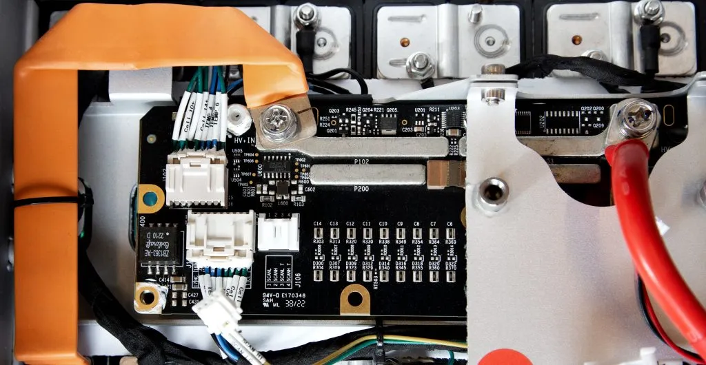

Meeting modern safety standards
Safety standards play a crucial role in many industries, especially when it comes to mobile automation. Standards such as EN 1175 set strict requirements for functional safety, with ISO 13849 defining different Performance Levels of reliability. For automated guided vehicles (AGVs) and autonomous mobile robots (AMRs), achieving Performance Level C is often essential to ensure both machines and operators are protected in daily operation.

How i-BMS15 supports compliance
The i-BMS15 supports this goal by combining precise monitoring of battery health with built-in protection features. It helps ensure that the battery system responds correctly to potential risks and contributes to creating a reliable foundation for compliance with ISO 13849 requirements. For AGVs and AMRs, this means safer, smarter, and more dependable energy supply, enabling fleets to operate efficiently while meeting functional safety demands.
By integrating the i-BMS15 into our battery systems, WS Technicals helps customers fulfill safety obligations without compromising performance. The result is peace of mind: a battery system that delivers reliable power while supporting the high safety standards required for automated logistics and industrial automation.